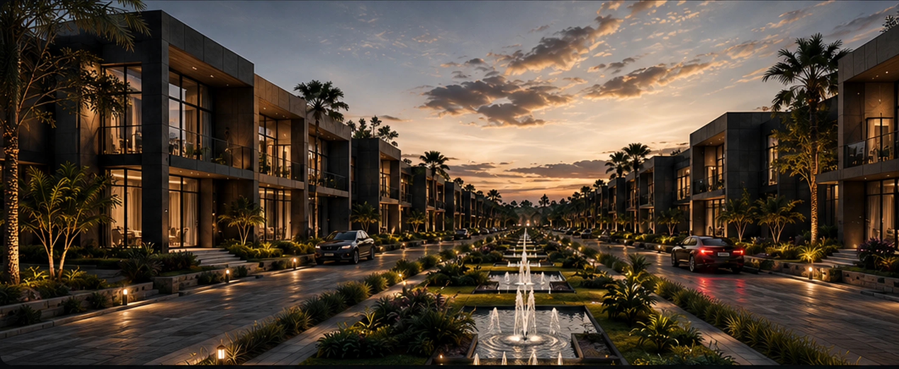
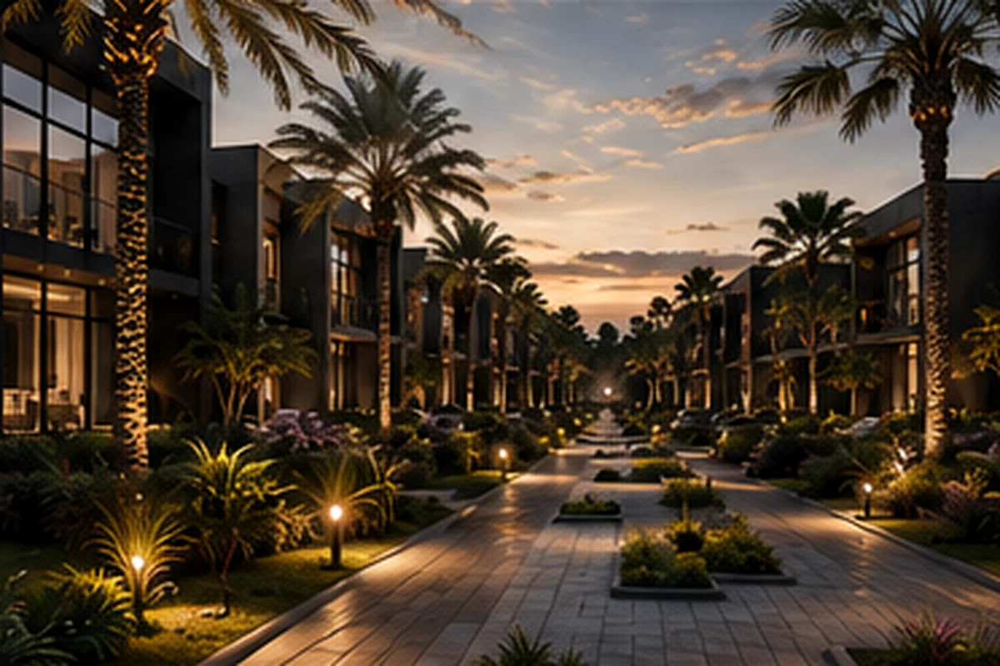

01 / MARKET
Clarify the product route
Compare exclusivity versus stronger inventory.
BADR reframed the site from a villa layout into a market-ready residential product.

BADR compared an exclusive 21-villa estate with a 32-villa market-ready route.
The visual direction connects villas, landscape, water and premium street presence.



Each move was evaluated as both an architectural and a development decision.
Compare exclusivity versus stronger inventory.
Four signature villas become a prestige and price anchor.
A landmark gate and ordered boulevard create memory.
Amenities and shade become part of the product promise.
Contemporary Najdi identity creates local luxury.
Move from strategy to coordinated delivery.
The design language translates local proportion, shadow and privacy into a premium expression.
The result is a clearer product mix, stronger arrival and a more marketable lifestyle story.